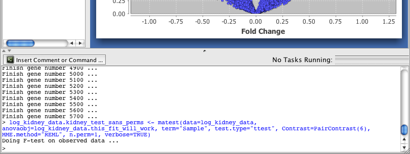

The built-in R terminal allows a basic level of interaction with the R environment without leaving the R/maanova application.

R Terminal
Many of the graphical interfaces that you can use in J/maanova are just front ends to R commands (Eg: see Loading Tab-Delimited Data). These interfaces will show you a preview of the R command being built. When you "OK" your settings you will see the command printed to the R terminal at the bottom of the screen in blue text along with any resulting R output in black text. If the command entered is a long-running task (such as a test with permutations) the status bar will read "Evaluating R Command" until the command completes.
The Insert Comment or Command... button can be used to execute user supplied R commands. This command should be used with caution since it is possible to enter commands which will delete or corrupt data objects in your workspace. Also note that if you use a plot command you must render to a file based graphics device (such as png(...)) rather than the default device. Rendering to the default device will cause errors. See http://cran.r-project.org/doc/manuals/R-intro.html#Multiple-graphics-devices for introductory documentation on using graphics devices.